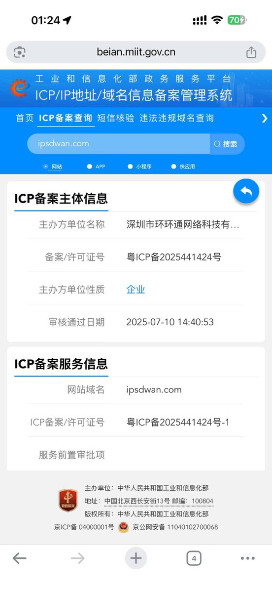
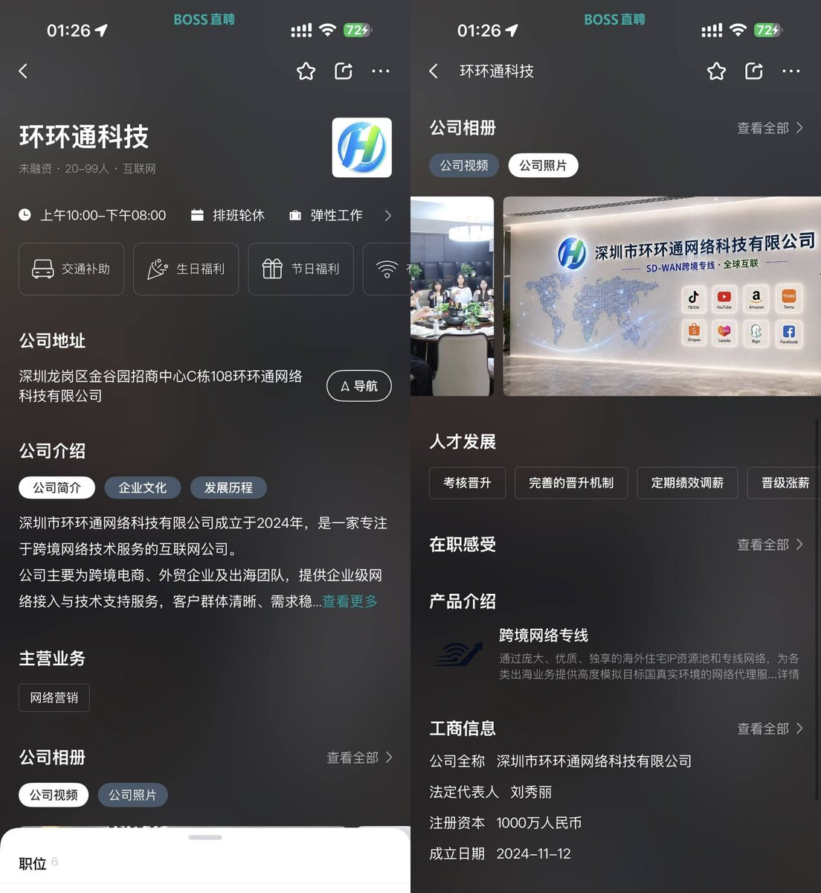
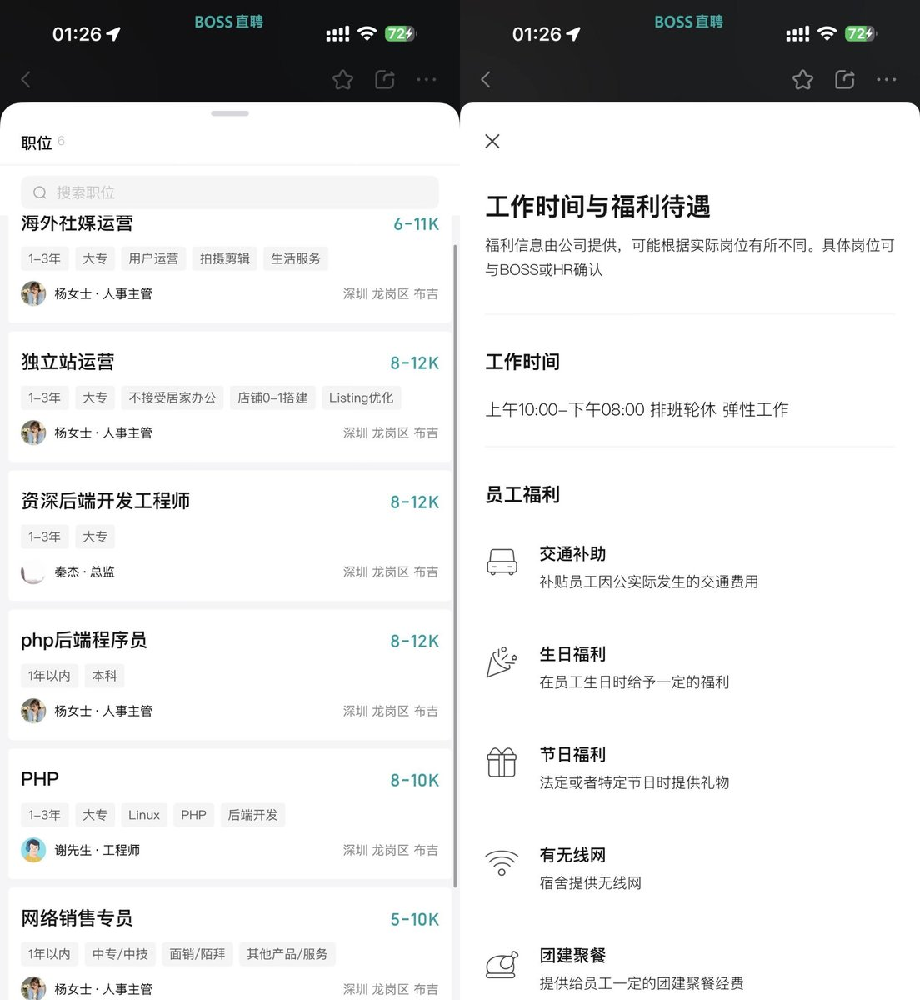

RT @realNyarime: 据悉，提供“跨境网络专线”的公司为深圳市环环通网络科技有限公司（环环通科技），成立于2024年底
将市面上廉价翻墙盒子刷成带有翻墙插件的OpenWrt系统（Kwrt），并派出所谓的攻城狮上门配置passwall2插件，对接自家VPN机场并按客户…

将市面上廉价翻墙盒子刷成带有翻墙插件的OpenWrt系统（Kwrt），并派出所谓的攻城狮上门配置passwall2插件，对接自家VPN机场并按客户…



据悉，提供“跨境网络专线”的公司为深圳市环环通网络科技有限公司（环环通科技），成立于2024年底
将市面上廉价翻墙盒子刷成带有翻墙插件的OpenWrt系统（Kwrt），并派出所谓的攻城狮上门配置passwall2插件，对接自家VPN机场并按客户购买档位配置限速
注：Kwrt可使用openwrt(.ai)分分钟在线编译、配置。 https://t.co/ibh9l8Hq7z https://t.co/mDB1jLSQop
将市面上廉价翻墙盒子刷成带有翻墙插件的OpenWrt系统（Kwrt），并派出所谓的攻城狮上门配置passwall2插件，对接自家VPN机场并按客户购买档位配置限速
注：Kwrt可使用openwrt(.ai)分分钟在线编译、配置。 https://t.co/ibh9l8Hq7z https://t.co/mDB1jLSQop